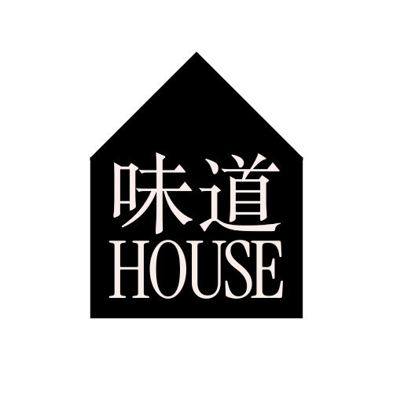

味道 House is a cafe and creative space centered around flavors, discovery, and people.
Our mission is to create a space that encourages curiosity and boldness in flavor. We believe there isn't a place where we can consistently and reliably discover new flavors, so we want to inspire people to step outside their comfort zones
by exploring unique ingredients and taking a chance on global tastes.
By fostering a culture of discovery, we celebrate the richness of flavors and the stories behind them, making every visit an opportunity to experience something new and exciting.
Throughout the year,
we'll have numerous offerings for engagement such as:
(1) flavor experimentation, (2) creative design, (3) customer outreach, (4) ingredient research, (5) community building, and (6) pop-up cafes.